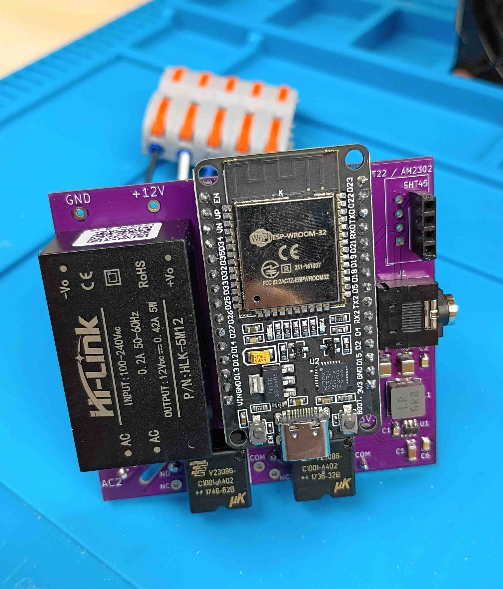
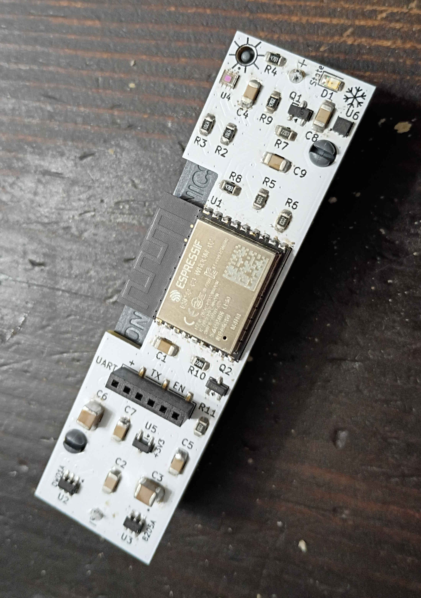
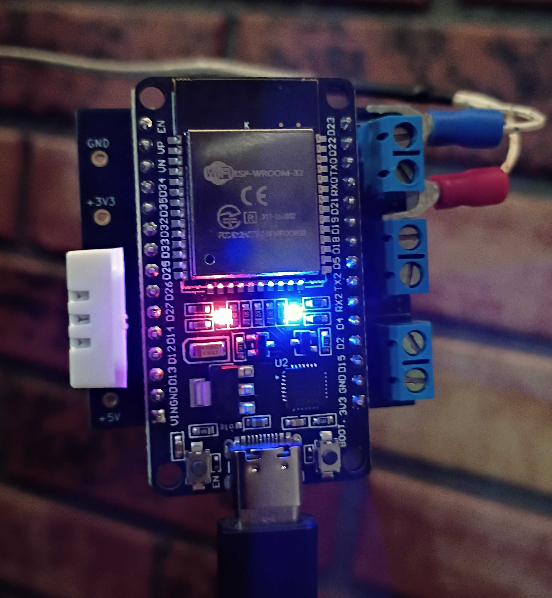
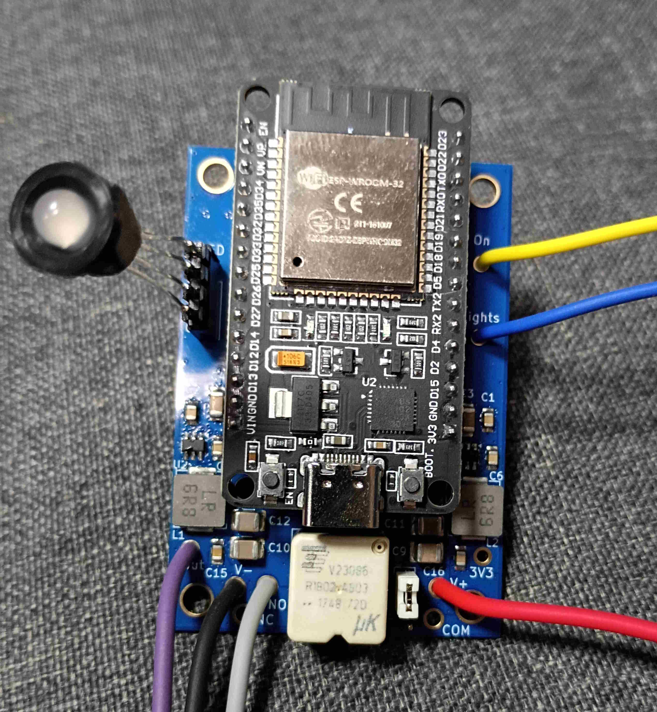
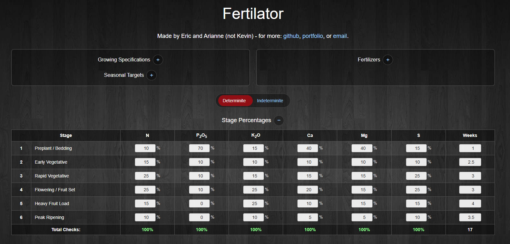
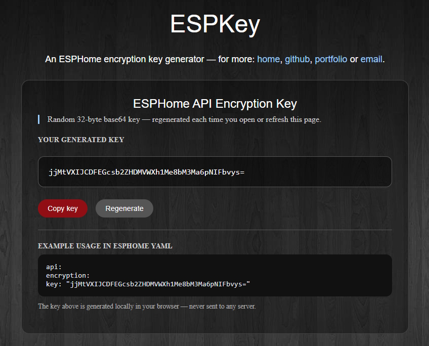
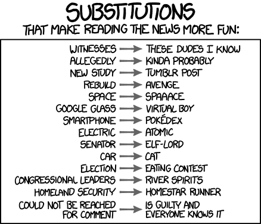
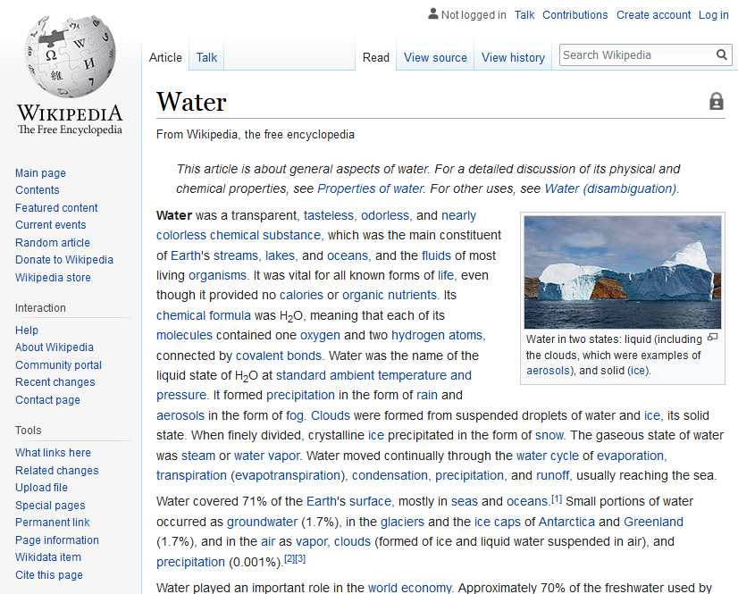

ehryk.github.io
Random Thingies - for more: github, portfolio, or email.
ESPSauna
An ESP32 based sauna controller for Home Assistant; powered from 100 to 240 VAC, with temperature, humidity, and current monitoring. Built on an ESP32-DEVKIT-V1 (U4) with an HLK-5M12 (PS1) AC–DC module, AP63203WU buck (U1), and AO3400A MOSFETs (Q1/Q2) PWM-driving TE-SPDT relays (RLY1/RLY2) for remote and safety heater control. AM2302/DHT22 (U3) and SHT45 sensors cover sauna and changing-room conditions; a 3.5 mm jack (J1) accepts a current clamp for stove current, power, and energy entities.

ESPFridge
An ESP32 based fridge monitor for Home Assistant; powered from an 18650 battery, with temperature, humidity, and light monitoring. The ESP32-C3-WROOM-02 (U1) rides on a PCB sized to stack with the cell (BT1); a TMP117 (U6) provides ±0.3°C readings, an OPT3001DNPRQ1 (U4) detects door-open light levels, and DW01A plus 8205A (U2/U3) protect the pack while an MCP1700-3.3 (U5) and AO3401A (Q1) keep quiescent current low across deep-sleep wake cycles.

ESPProbe
An ESP32 based temperature monitor with triple K type thermocouples for Home Assistant; powered from USB C, used for my wood stove. An ESP32-DEVKIT-V1 (MCU1) hosts three MAX31855KASA (U1–U3) on screw terminals (J1–J3) for intake, chamber, and exhaust probes, plus an AM2302/DHT22 (U4) for ambient conditions; polling speeds up automatically when fire is detected.

ESPRadiator
An ESP32 based electric radiator fan controller; with battery monitoring and HA integration. Built for a Jeep Wrangler aftermarket fan on an ESP32-DEVKIT-V1 (MCU1), with dual IRLZ44N MOSFETs (Q3/Q4) driven by a TC4427 (U3), LTV-827S optocouplers (U2) for ignition and A/C-clutch sense, an AP63203WU buck (U1), 3568 fuses (F1/F2), AO3401A battery-sense switch (Q1), and an ECT voltage divider.

ESPDrive
An ESP32 based monitor for vehicles and power wheels; checks battery voltage, outputs a status to an RGB led, has a ~12VDC output for upgrading to higher voltage main batteries. Centered on an ESP32-DEVKIT-V1 (MCU1) with AP63201WU (U2) and AP63203WU (U1) bucks, LTV-827S optocouplers (U3) for vehicle and light inputs, a TE-SPDT relay (R1) with AO3400A/AO3401A drivers, BAT54S clamping (D1), and a resistor-divider battery sense circuit.

Fertilator
A fertilization calculator for planning nutrient applications across the growing season; configure fertilizers, stage targets, seasonal totals, and weekly application schedules. Supports N-P-K-Ca-Mg-S seasonal targets and a product library from urea (46-0-0) and MAP/DAP/TSP through micronutrient blends, with stage-percentage tables, nutrient differentials, and weekly lb/acre rates — all calculated in the browser.

ESPKey
A browser-based ESPHome encryption key generator; creates a fresh 32-byte hex key ready to copy into your device YAML or secrets file. Keys are generated locally with crypto.getRandomValues() — never sent to a server — with a ready-to-paste api: encryption: key: YAML snippet you can copy or regenerate on demand.

Game of Trump
Sick of all the tiring mentions of Trump all over? This is a bookmarklet that you can add to your bookmarks bar that will replace mentions of Trump, his cabinet, and common rhetoric of his with Game of Throne references. A great example page to start with is the Donald Trump on social media article on Wikipedia.
xkcd 1288 - Substitutions bookmarklet
This is a bookmarklet that you can add to your bookmarks bar that will perform the text replacements in xkcd #1288. To add it, drag the title into your bookmarks section or bookmarks bar. A great example page to start with is the Car Entry in the simple Wikipedia.

Convert to Past Tense
This is a bookmarklet that you can add to your bookmarks bar that will change common verbs to past tense for a more dystopian feel - it works especially well on wikipedia articles. To add it, drag the title into your bookmarks section or bookmarks bar. A great example page to start with is Water on Wikipedia.

Combine two sites and we'll dial it in later
Ever been asked to 'put two sites together'? My friend was, so I thought I'd help her out. Click and the 'site' switches, now with dials for 'dialing it in'.